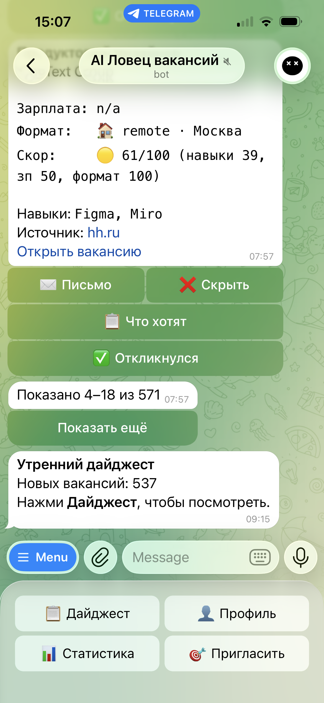

AI Ловец вакансий
Поиск работы — это отдельная работа
Каждое утро открываешь hh.ru, скроллишь ленту, пытаешься понять, подходит ли вакансия «Middle/Senior фронтенд в финтех-стартап с React/Vue/Angular от 3 лет». Потом то же на Habr. Потом сопроводительное, которое на третьей вакансии превращается в копипасту с подменой названия компании.
К пятому дню хочется всё бросить. 80% просмотренных вакансий не подходят, но это понимаешь только после прочтения описания. Ловец делает шаги 1–4 за тебя: находит, оценивает, фильтрует, пишет отклик.
Push вместо pull
Заполняешь профиль за пару минут — или загружаешь резюме PDF/DOCX, бот извлечёт данные сам через Groq Llama 3.3 70B. Три раза в день (09:00, 13:00, 17:00) бот скрейпит пять источников: hh.ru, Habr Career, Getmatch, SuperJob и HireHi.ru. Каждая вакансия проходит через персональный скоринг 0–100. Утром приходит дайджест — только то, что реально подходит.

Скоринг: ядро продукта
Бот не просто парсит вакансии — он понимает, насколько каждая подходит конкретному пользователю. Не по ключевым словам, а по четырём взвешенным параметрам:
Навыки — 40%. Первый навык в списке весит больше. Логика: что вводишь первым — то твоя сильная сторона.
Зарплата — 25%. Пересечение диапазонов с нормализацией валют.
Формат — 20%. Удалёнка, гибрид, офис. Точное совпадение — 100. Гибрид для удалёнщика — 50.
Отрасль — 15%. 21 отрасль с наборами ключевых слов по описанию и компании.
Красные флаги делят оценку пополам. Чёрный список компаний — ноль. Скоринг самообучается: отклики повышают вес навыков, скрытие — понижает.
Сопроводительные за 5 секунд
Нажимаешь «Письмо» — Gemini 2.5 Pro получает описание вакансии, профиль, контекст компании. Генерирует сопроводительное, которое адресно отвечает на требования. Без выдумок — только факты из профиля. Не нравится — «Другой вариант» перегенерирует с другой структурой. Gemini 2.5 Pro для писем, Groq для парсинга — бесплатные тиры, нулевые затраты на AI. Каждое письмо — 5 секунд вместо 15 минут.
Фримиум через Telegram Stars
Сейчас бот работает в режиме бесплатного доступа — все функции открыты для всех пользователей. Монетизация включится после набора аудитории.
Запланированная модель:
Первое письмо к каждой вакансии бесплатно. Рестайл и фильтры — Pro или кредиты.
Pro: 200 Stars/нед. или 700 Stars/мес. Безлимит писем, 5 push-алертов за скрейп, фильтры по источнику.
Кредиты: 100 Stars = 3 рестайла, 300 Stars = 10. Разовая покупка без обязательств.
Stars — нативная валюта Telegram. Не нужно вводить данные карты. Нажал — оплатил — работает. Реферальная программа: пригласил друга — +1 месяц Pro при первой оплате.
Фичи, которые удерживают
Трекер откликов — «Откликнулся» → «Интервью» → «Оффер» или «Отказ». Вся воронка в статистике.
Weekly summary — по понедельникам итоги: вакансии, отклики, средний скор.
Inline-режим — @jobhunt_ai_bot react developer в любом чате. Скинуть другу вакансию за 2 секунды.
«Я нашёл работу» — бот поздравляет и ставит напоминание через 90 дней: «Как дела на новом месте?»
Процесс и стек
Весь проект — от продуктовой стратегии и монетизации до продакшна — одним человеком.
Бот: TypeScript, grammY, SQLite (WAL), node-cron, cheerio
AI: Gemini 2.5 Pro для писем, Groq Llama 3.3 70B для парсинга (бесплатные тиры)
Скрейперы: hh.ru API + Habr Career + Getmatch + SuperJob + HireHi.ru, ротация User-Agent, rate-limiting
Инфра: Railway 24/7 (~$5/мес), GitHub Actions (CI + бэкапы), launchd (стратег)
Качество: Vitest (452 теста, ~35% coverage), pre-commit typecheck, CodeRabbit ревью
Один процесс, один файл базы, один сервер. Один Pro-пользователь окупает инфраструктуру.